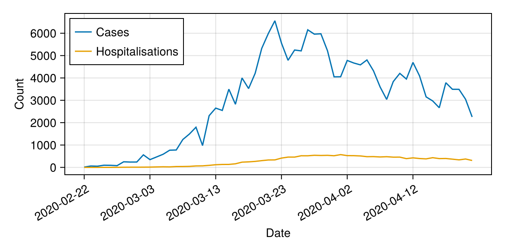
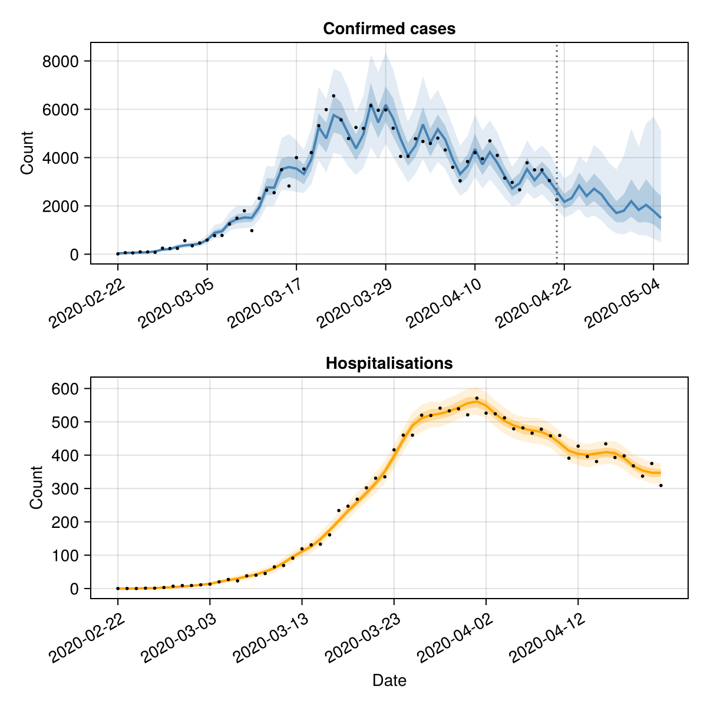

Forecasting multiple data streams
This tutorial demonstrates how to use EpiNow2.jl to forecast multiple epidemiological outcomes — for example, cases and hospitalisations — by combining estimate_infections() with estimate_secondary().
Setup
using EpiNow2
using CSV, DataFrames, Dates, Distributions, Statistics, Random
using CairoMakie
Random.seed!(6789)Data
We use the example case data and simulate a hospitalisation time series, assuming 10% of cases are hospitalised with a log-normal delay (mean ~7 days).
pkgdir = dirname(dirname(pathof(EpiNow2)))
cases_df = CSV.read(
joinpath(pkgdir, "test", "reference", "example_confirmed_full.csv"),
DataFrame
)
cases_df.date = Date.(cases_df.date)
cases_df = first(cases_df, 60)
# Simulate hospitalisations: 10% of cases with a lognormal delay
primary = DataFrame(date=cases_df.date, primary=cases_df.confirm)
hosp = simulate_secondary(
primary;
delays = delay_opts(LogNormal(1.6, 0.5)),
frac = 0.1
)
df = DataFrame(
date = cases_df.date,
cases = cases_df.confirm,
hospitalisations = hosp.secondary
)
first(df, 6)| Row | date | cases | hospitalisations |
|---|---|---|---|
| Date | Int64 | Int64 | |
| 1 | 2020-02-22 | 14 | 0 |
| 2 | 2020-02-23 | 62 | 0 |
| 3 | 2020-02-24 | 53 | 0 |
| 4 | 2020-02-25 | 97 | 1 |
| 5 | 2020-02-26 | 93 | 1 |
| 6 | 2020-02-27 | 78 | 3 |
fig = Figure(size=(600, 300))
ax = Axis(fig[1, 1]; xlabel="Date", ylabel="Count")
date_nums = Dates.value.(df.date .- df.date[1])
lines!(ax, date_nums, Float64.(df.cases); label="Cases")
lines!(ax, date_nums, Float64.(df.hospitalisations); label="Hospitalisations")
tick_step = max(1, nrow(df) ÷ 6)
ax.xticks = (date_nums[1:tick_step:end], string.(df.date[1:tick_step:end]))
ax.xticklabelrotation = π/6
axislegend(ax; position=:lt)
fig
Estimating infections
We first estimate infections and forecast cases using estimate_infections(). We use the confirmed cases and specify the generation time, incubation period, and reporting delay.
generation_time = UncertainDistribution(
(shape, rate) -> Gamma(max(1e-6, shape), max(1e-6, 1 / rate)),
[truncated(Normal(1.4, 0.48); lower=0.01),
truncated(Normal(0.38, 0.25); lower=0.01)],
14.0
)
incubation_period = UncertainDistribution(
(μ, σ) -> LogNormal(μ, σ),
[Normal(1.62, 0.064), truncated(Normal(0.418, 0.069); lower=0.01)],
14.0
)
reporting_delay = LogNormal(0.5, 0.5)
delay = incubation_period + reporting_delay
est = estimate_infections(
rename(df[!, [:date, :cases]], :cases => :confirm);
generation_time = gt_opts(generation_time),
delays = delay_opts(discretise(delay)),
forecast = forecast_opts(horizon=14),
inference = inference_opts(samples=500, warmup=250, chains=1),
verbose=false
)
estEpiNow2 estimate_infections result
Data: 60 days (2020-02-22 to 2020-04-21)
Forecast: 14 days
Timing: 294.9s
Latest Rt: 0.94 (90% CrI: 0.81-1.08)
Latest infections: 1238.39 (90% CrI: 218.19-7141.25)
Latest reports: 1498.5 (90% CrI: 489.5-5128.15)
Estimating the secondary relationship
We use estimate_secondary() to learn the delay and scaling between cases and hospitalisations.
sec_data = DataFrame(
date = df.date,
primary = df.cases,
secondary = df.hospitalisations
)
sec = estimate_secondary(
sec_data;
delays = delay_opts(LogNormal(1.6, 0.5)),
obs = obs_opts(week_effect=false),
inference = inference_opts(samples=500, warmup=250, chains=1),
burn_in=14,
verbose=false
)
secEpiNow2.EstimateSecondaryResult(EpiNow2.EpiNow2Fit{EpiNow2.SecondaryMetadata, @NamedTuple{expected::Vector{Float64}}}(MCMC chain (500×16×1 Array{Float64, 3}), [(expected = [0.00011536251855993671, 0.016544878768571806, 0.1797262792698023, 0.7571578483690964, 1.7275877467996341, 2.9969423170456695, 4.399148067961216, 5.774289181848727, 7.891017492442763, 10.955389963680345 … 398.57994650872496, 395.95820072869225, 400.2383904425888, 405.70406942383784, 401.88177503496513, 386.4542621160479, 365.3866152553806, 350.07916050837895, 344.4172298512026, 343.0715170473922],), (expected = [0.00011624652738148494, 0.016672761006198262, 0.18111553454618431, 0.7630105817793277, 1.7409417892200998, 3.0201083210414827, 4.4331529575381055, 5.8189237505447675, 7.952014122091541, 11.04007383221818 … 401.66092262186703, 399.01891105522344, 403.3321861323372, 408.8401141694483, 404.98827389438094, 389.44150811459093, 368.21101082085687, 352.785231248535, 347.07953453311706, 345.7234195275644],), (expected = [0.00011582571859870366, 0.01661188608341108, 0.18045421668647912, 0.760224544397948, 1.7345849540854414, 3.009080763730107, 4.41696583831185, 5.797676656550782, 7.922978306101256, 10.99976233897063 … 400.1943062529503, 397.5619416726125, 401.85946734645813, 407.3472838492296, 403.50950810395267, 388.0195094626843, 366.8665327669847, 351.4970785666526, 345.81221551402945, 344.46105219871623],), (expected = [0.00011671825413306846, 0.016741001809989234, 0.18185687203363174, 0.766133730386213, 1.7480678030086072, 3.0324702155675762, 4.451298722271504, 5.842741748268411, 7.984563279136565, 11.085263026311194 … 403.3049999411561, 400.65217410043147, 404.98310426257956, 410.5135773347554, 406.645970718247, 391.0355689618637, 369.7181710581899, 354.22925072966797, 348.50019947300484, 347.13853362144505],), (expected = [0.00011626418835808259, 0.01667531587346986, 0.18114328947840472, 0.7631275093317126, 1.741208580031371, 3.02057113797776, 4.433832316775687, 5.819815472498183, 7.953232729895562, 11.041765670335616 … 401.7224752282503, 399.08005878602813, 403.3939948518237, 408.90276695244256, 405.05033640135986, 389.5011881544115, 368.26743738897295, 352.8392938900477, 347.13272280402214, 345.77639998036057],), (expected = [0.00011725614512501799, 0.01681881404666935, 0.18270218927534826, 0.7696949307983671, 1.7561933091675845, 3.0465659853891847, 4.471989606049806, 5.869900450586683, 8.021677770335756, 11.136790442033321 … 405.17967500918115, 402.51451808781934, 406.86557963147175, 412.42175989797937, 408.5361755581207, 392.8532122638157, 371.4367250989869, 355.87580791238804, 350.12012641413986, 348.75213115672193],), (expected = [0.00011666978669385252, 0.0167339904268131, 0.18178070351130232, 0.7658128433159791, 1.7473356426234112, 3.031200096013139, 4.449434340515984, 5.840294574447885, 7.981219024681386, 11.080620074622388 … 403.13607965569105, 400.48436492467135, 404.81348111981845, 410.34163780838264, 406.47565110041853, 390.8717876054695, 369.5633182817754, 354.0808853334008, 348.3542336328461, 346.99313810147805],), (expected = [0.00011633212566257977, 0.016685143800867906, 0.18125005567398475, 0.7635773000149496, 1.7422348567201023, 3.0223514775276414, 4.436445639721416, 5.823245701032886, 7.957920405516824, 11.048273743131519 … 401.959252517396, 399.31527862135425, 403.63175734321874, 409.1437763424013, 405.2890751489695, 389.73076215419997, 368.48449610702556, 353.0472591810988, 347.3373246127721, 345.9802023654735],), (expected = [0.00011581474739495089, 0.016610298970193248, 0.18043697500027614, 0.7601519076445704, 1.734419220535338, 3.0087932564747724, 4.416543812464319, 5.797122708518087, 7.922221292782161, 10.998711349485395 … 400.15606905907737, 397.523955992151, 401.8210710521515, 407.3083632128704, 403.47095415390874, 387.98243552890585, 366.83147992761036, 351.46349422593556, 345.7791743424875, 344.42814012619704],), (expected = [0.00011602280384770423, 0.016640396774742442, 0.18076394405050197, 0.761529381401123, 1.7375621695966987, 3.014245505930153, 4.424547054659624, 5.807627705534756, 7.936577192955655, 11.01864217468073 … 400.88119413191936, 398.244311398026, 402.54921328451667, 408.04644899837734, 404.2020861487688, 388.6855006916154, 367.4962173241175, 352.10038320868387, 346.4057627370442, 345.05228030401355],) … (expected = [0.0001171885124010194, 0.016809030180410457, 0.18259590174022325, 0.7692471566430389, 1.7551716335425525, 3.044793627561742, 4.469387999306416, 5.866485600653252, 8.01701111077612, 11.130311546610168 … 404.94395925383213, 402.2803528038221, 406.6288830907898, 412.1818310154195, 408.2985071380328, 392.6246675036156, 371.2206395112795, 355.66877498349794, 349.9164418881904, 348.5492424703866],), (expected = [0.00011621305788020091, 0.01666791925053688, 0.18106293588413105, 0.7627889911530646, 1.7404361911660486, 3.0192312318297185, 4.431865496748558, 5.817233838953538, 7.9497047257093, 11.036867612124357 … 401.54427363436673, 398.9030293516626, 403.21505178221923, 408.7213802257575, 404.8706585889341, 389.3284078475497, 368.1040762420369, 352.682776571721, 346.97873688517757, 345.6230157178944],), (expected = [0.000116296292867937, 0.016679960167121696, 0.18119374300174487, 0.7633400627959585, 1.741693558208097, 3.0214124567354936, 4.435067270868801, 5.821436464184713, 7.955447941836789, 11.044841130699487 … 401.8343669035079, 399.1912144695965, 403.50635209508624, 409.0166585528261, 405.1631549850818, 389.6096758371812, 368.3700108396607, 352.9375701432099, 347.22940960715425, 345.87270900718505],), (expected = [0.00011730449662754711, 0.016825808658244828, 0.18277817559852988, 0.7700150502896991, 1.756923718186282, 3.0478330667502407, 4.473849528105221, 5.872341770637554, 8.025014025156796, 11.141422287535281 … 405.34819122835864, 402.68192585512537, 407.0347970266732, 412.5932881358801, 408.706087762384, 393.0166018465131, 371.5912074593418, 356.02381841075334, 350.26574309626216, 348.8971788828886],), (expected = [0.00011749119019781314, 0.01685281607144493, 0.18307157202313165, 0.7712510873851862, 1.759743954586858, 3.052725488510468, 4.481031011012251, 5.881768132438507, 8.0378958859321, 11.159306649518884 … 405.99886169277704, 403.3283163938638, 407.6881748538098, 413.25558852904436, 409.36214836829066, 393.6474774748289, 372.1876907512608, 356.5953127166441, 350.82799446082686, 349.4572334094414],), (expected = [0.00011534418501273526, 0.016542226606079076, 0.17969746736593487, 0.757036467946618, 1.7273107959807303, 2.9964618749761183, 4.398442837161542, 5.77336350107263, 7.88975247725113, 10.953633696476672 … 398.51604983753793, 395.8947243516769, 400.1742279049229, 405.6390306787846, 401.8173490449951, 386.39230932306464, 365.32803983378625, 350.0230390371495, 344.36201604862407, 343.01651897711406],), (expected = [0.00011765697287667476, 0.016876798479103946, 0.18333210614420284, 0.7723486803048039, 1.7622483062088465, 3.0570699272845276, 4.487408121229971, 5.890138680546052, 8.049334894704653, 11.17518784690103 … 406.57665284270115, 403.9023069975584, 408.26837012425835, 413.84370698022315, 409.9447259288772, 394.20769093875106, 372.7173640436487, 357.10279595160364, 351.32727002387, 349.9545581945865],), (expected = [0.00011796108876020916, 0.01692079240624147, 0.18381003643803384, 0.7743621321491266, 1.76684235132521, 3.0650394741956197, 4.499106451366602, 5.905493822897913, 8.070318897879837, 11.20432071172515 … 407.6365673480288, 404.9552496860327, 409.33269480827545, 414.9225661447103, 411.0134207453781, 395.2353604981909, 373.6890099502373, 358.033735863049, 352.24315357711356, 350.866863192168],), (expected = [0.00011779212028157599, 0.016896349135304307, 0.18354449570499878, 0.7732434470907125, 1.764289874272507, 3.060611549546263, 4.49260679399007, 5.896962420288367, 8.058660068847503, 11.18813432977644 … 407.0476729457863, 404.3702288640628, 408.741350086191, 414.32314598432833, 410.4196479533467, 394.6643815674685, 373.14915807305687, 357.51650046347805, 351.7342835740142, 350.3599814545249],), (expected = [0.00011697898157166138, 0.016778719090004026, 0.18226661564809973, 0.7678599215209849, 1.7520064122060257, 3.039302741145413, 4.461328042729517, 5.855906160755198, 8.002553478581945, 11.11023948310191 … 404.2136956360006, 401.55489265284814, 405.895580932558, 411.438514839795, 407.5621940305765, 391.91662012183167, 370.5511915025676, 355.027372734261, 349.2854132214988, 347.9206793695411],)], EpiNow2.SecondaryMetadata([Dates.Date("2020-02-22"), Dates.Date("2020-02-23"), Dates.Date("2020-02-24"), Dates.Date("2020-02-25"), Dates.Date("2020-02-26"), Dates.Date("2020-02-27"), Dates.Date("2020-02-28"), Dates.Date("2020-02-29"), Dates.Date("2020-03-01"), Dates.Date("2020-03-02") … Dates.Date("2020-04-12"), Dates.Date("2020-04-13"), Dates.Date("2020-04-14"), Dates.Date("2020-04-15"), Dates.Date("2020-04-16"), Dates.Date("2020-04-17"), Dates.Date("2020-04-18"), Dates.Date("2020-04-19"), Dates.Date("2020-04-20"), Dates.Date("2020-04-21")], 14)), EpiNow2.EstimateSecondaryArgs(EpiNow2.SecondaryOpts(incidence, false, true, true, false, false), EpiNow2.DelayOpts(Distributions.LogNormal{Float64}(μ=1.6, σ=0.5), true), EpiNow2.ObsOpts{Float64}(negbin, Distributions.Normal{Float64}(μ=0.0, σ=0.25), 1.0, false, 7, 1.0, true), EpiNow2.InferenceOpts(nuts, 500, 250, 1, nothing, 0.9, 12, true, AutoForwardDiff()), 14, [0.2, 0.5, 0.9]), EpiNow2.SecondaryData([Dates.Date("2020-02-22"), Dates.Date("2020-02-23"), Dates.Date("2020-02-24"), Dates.Date("2020-02-25"), Dates.Date("2020-02-26"), Dates.Date("2020-02-27"), Dates.Date("2020-02-28"), Dates.Date("2020-02-29"), Dates.Date("2020-03-01"), Dates.Date("2020-03-02") … Dates.Date("2020-04-12"), Dates.Date("2020-04-13"), Dates.Date("2020-04-14"), Dates.Date("2020-04-15"), Dates.Date("2020-04-16"), Dates.Date("2020-04-17"), Dates.Date("2020-04-18"), Dates.Date("2020-04-19"), Dates.Date("2020-04-20"), Dates.Date("2020-04-21")], [14, 62, 53, 97, 93, 78, 250, 238, 240, 561 … 4694, 4092, 3153, 2972, 2667, 3786, 3493, 3491, 3047, 2256], [0, 0, 0, 1, 1, 3, 7, 9, 9, 11 … 427, 396, 381, 434, 393, 398, 368, 337, 375, 309]), 60×10 DataFrame
Row │ date mean median sd lower_20 upper_20 lower_50 ⋯
│ Date Float64 Float64 Float64 Float64 Float64 Float64 ⋯
─────┼──────────────────────────────────────────────────────────────────────────
1 │ 2020-02-22 0.0 0.0 0.0 0.0 0.0 0.0 ⋯
2 │ 2020-02-23 0.014 0.0 0.117608 0.0 0.0 0.0
3 │ 2020-02-24 0.21 0.0 0.440782 0.0 0.0 0.0
4 │ 2020-02-25 0.754 1.0 0.926932 0.0 1.0 0.0
5 │ 2020-02-26 1.666 1.0 1.26398 1.0 2.0 1.0 ⋯
6 │ 2020-02-27 3.14 3.0 1.89726 2.0 3.0 2.0
7 │ 2020-02-28 4.464 4.0 2.16843 4.0 5.0 3.0
8 │ 2020-02-29 5.896 6.0 2.50634 5.0 7.0 4.0
⋮ │ ⋮ ⋮ ⋮ ⋮ ⋮ ⋮ ⋮ ⋱
54 │ 2020-04-15 408.618 409.0 20.9827 404.0 415.0 395.0 ⋯
55 │ 2020-04-16 405.024 406.0 21.3479 400.0 411.0 390.0
56 │ 2020-04-17 391.116 391.0 20.6556 386.0 395.0 378.0
57 │ 2020-04-18 368.79 367.0 20.4909 363.0 374.0 356.0
58 │ 2020-04-19 354.904 354.0 20.0589 349.0 359.0 341.0 ⋯
59 │ 2020-04-20 347.514 347.0 19.3835 343.0 352.0 334.0
60 │ 2020-04-21 346.472 347.0 18.9154 342.0 351.0 335.0
3 columns and 45 rows omitted, 60×10 DataFrame
Row │ date mean median sd lower_20 u ⋯
│ Date Float64 Float64 Float64 Float64 F ⋯
─────┼──────────────────────────────────────────────────────────────────────────
1 │ 2020-02-22 0.000116516 0.000116524 8.77999e-7 0.000116294 ⋯
2 │ 2020-02-23 0.0167117 0.0167128 0.000127013 0.0166797
3 │ 2020-02-24 0.181539 0.181551 0.00137981 0.181191
4 │ 2020-02-25 0.764793 0.764845 0.00581294 0.763327
5 │ 2020-02-26 1.74501 1.74513 0.0132633 1.74166 ⋯
6 │ 2020-02-27 3.02716 3.02737 0.0230085 3.02136
7 │ 2020-02-28 4.44351 4.44381 0.0337737 4.43499
8 │ 2020-02-29 5.83252 5.83291 0.0443311 5.82134
⋮ │ ⋮ ⋮ ⋮ ⋮ ⋮ ⋱
54 │ 2020-04-15 409.795 409.823 3.11472 409.01 4 ⋯
55 │ 2020-04-16 405.934 405.962 3.08538 405.156 4
56 │ 2020-04-17 390.351 390.378 2.96694 389.603 3
57 │ 2020-04-18 369.071 369.096 2.80519 368.364 3
58 │ 2020-04-19 353.609 353.633 2.68767 352.932 3 ⋯
59 │ 2020-04-20 347.89 347.914 2.64421 347.224 3
60 │ 2020-04-21 346.531 346.554 2.63387 345.867 3
5 columns and 45 rows omitted, 6.387250900268555)Visualising results
We combine the case forecast from estimate_infections() with the fitted secondary relationship to show both data streams.
fig = Figure(size=(600, 600))
# Cases panel
ax1 = Axis(fig[1, 1]; title="Confirmed cases", ylabel="Count",
xticklabelrotation=π/6)
date_nums_r = Dates.value.(est.reports.date .- est.reports.date[1])
band!(ax1, date_nums_r, est.reports.lower_90, est.reports.upper_90;
color=(:steelblue, 0.15))
band!(ax1, date_nums_r, est.reports.lower_50, est.reports.upper_50;
color=(:steelblue, 0.3))
lines!(ax1, date_nums_r, est.reports.median; color=:steelblue, linewidth=2)
obs_nums = Dates.value.(df.date .- est.reports.date[1])
scatter!(ax1, obs_nums, Float64.(df.cases); color=:black, markersize=4)
fd = Dates.value(df.date[end] - est.reports.date[1])
vlines!(ax1, [fd]; color=:grey40, linestyle=:dot)
tick_idx = 1:max(1, length(date_nums_r) ÷ 6):length(date_nums_r)
ax1.xticks = (date_nums_r[tick_idx], string.(est.reports.date[tick_idx]))
# Hospitalisations panel
ax2 = Axis(fig[2, 1]; title="Hospitalisations", xlabel="Date", ylabel="Count",
xticklabelrotation=π/6)
date_nums_s = Dates.value.(sec.predictions.date .- sec.predictions.date[1])
band!(ax2, date_nums_s, sec.predictions.lower_90, sec.predictions.upper_90;
color=(:orange, 0.15))
band!(ax2, date_nums_s, sec.predictions.lower_50, sec.predictions.upper_50;
color=(:orange, 0.3))
lines!(ax2, date_nums_s, sec.predictions.median; color=:orange, linewidth=2)
obs_nums_s = Dates.value.(df.date .- sec.predictions.date[1])
scatter!(ax2, obs_nums_s, Float64.(df.hospitalisations); color=:black, markersize=4)
tick_idx2 = 1:max(1, length(date_nums_s) ÷ 6):length(date_nums_s)
ax2.xticks = (date_nums_s[tick_idx2], string.(sec.predictions.date[tick_idx2]))
fig
Fitted parameters
The fraction of cases that become hospitalisations and the delay parameters:
params = get_parameters(sec)
param_summary = DataFrame(
parameter = Symbol[], median = Float64[],
lower_90 = Float64[], upper_90 = Float64[]
)
for (k, v) in sort(collect(params), by=first)
any(ismissing, v) && continue
push!(param_summary, (
parameter=k, median=round(median(v), digits=4),
lower_90=round(quantile(v, 0.05), digits=4),
upper_90=round(quantile(v, 0.95), digits=4)
))
end
param_summary| Row | parameter | median | lower_90 | upper_90 |
|---|---|---|---|---|
| Symbol | Float64 | Float64 | Float64 | |
| 1 | acceptance_rate | 0.9763 | 0.8204 | 1.0 |
| 2 | frac | 0.1004 | 0.0991 | 0.1017 |
| 3 | hamiltonian_energy | 201.848 | 200.208 | 205.173 |
| 4 | hamiltonian_energy_error | 0.001 | -0.1827 | 0.1955 |
| 5 | is_accept | 1.0 | 1.0 | 1.0 |
| 6 | log_density | -200.721 | -203.667 | -199.881 |
| 7 | logjoint | -193.316 | -195.367 | -192.738 |
| 8 | loglikelihood | -191.307 | -193.314 | -190.729 |
| 9 | logprior | -2.0116 | -2.058 | -1.9672 |
| 10 | max_hamiltonian_energy_error | 0.0303 | -0.2757 | 0.4722 |
| 11 | n_steps | 7.0 | 3.0 | 7.0 |
| 12 | nom_step_size | 0.5529 | 0.5529 | 0.5529 |
| 13 | numerical_error | 0.0 | 0.0 | 0.0 |
| 14 | overdispersion | 0.0079 | 0.0005 | 0.0274 |
| 15 | step_size | 0.5529 | 0.5529 | 0.5529 |
| 16 | tree_depth | 2.0 | 1.0 | 3.0 |